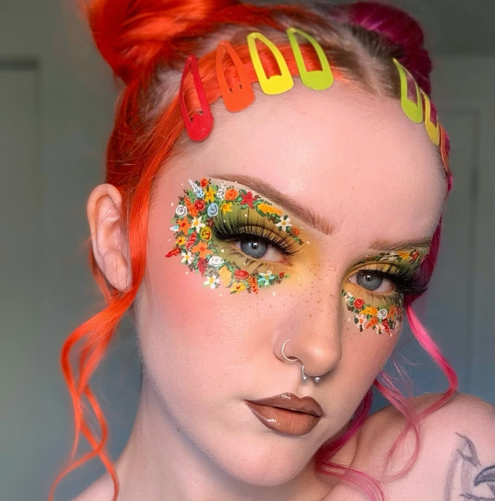
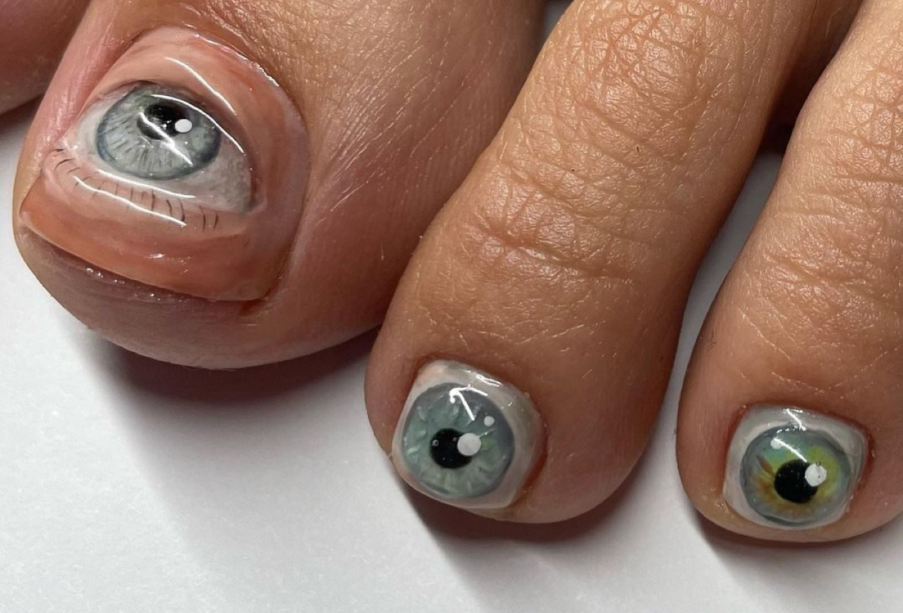

Martin Scorsese Goes Viral After Narrating His Daughter's Makeup Routine
When legendary filmmaker Martin Scorsese's narration of his daughter's makeup routine emerged on social media platforms, the internet experienced a peculiar collision between high art cinema traditions and contemporary beauty culture aesthetics. The video captured the acclaimed director employing his distinctive narrative voice and conceptual framework to describe mundane cosmetic application with the gravitas and analytical precision typically reserved for discussing cinematic technique and artistic intention. This unlikely viral moment revealed unexpected intersections between Scorsese's artistic sensibilities and everyday beauty practices, generating millions of engagements and sparking broader conversations about celebrity, family dynamics, and the democratization of content creation across generations. The phenomenon demonstrates how contemporary internet culture transforms even ostensibly private family moments into public entertainment phenomena, while simultaneously exposing the distinctive qualities of established artists when they engage with formats existing outside their traditional domains.
Martin Scorsese, born in 1942, stands among cinema's most celebrated and influential directors, having fundamentally shaped contemporary filmmaking through decades of innovative work across multiple genres. His daughter, Francesca Scorsese, represents a different generational engagement with media and performance, utilizing platforms like social media to document and share aspects of daily life. The makeup narration video emerged through social media sharing rather than through traditional media channels, embodying contemporary patterns wherein family content achieves viral circulation before mainstream media acknowledges or amplifies the phenomenon. The video captured an intergenerational moment, with Scorsese's established artistic authority applied to content representing contemporary youth culture's embrace of beauty aesthetics and social media documentation.
The incident generated substantial media attention, with entertainment outlets, film criticism publications, and social media commentators dissecting the video's implications for understanding Scorsese as both artist and family member. The phenomenon produced unexpected sympathetic responses toward Scorsese, with audiences experiencing delight in observing the prestigious filmmaker engaging in supportive family participation. Simultaneously, the moment raised questions about privacy, celebrity children's exposure, and the increasingly blurred boundaries between professional celebrity personas and private family life within digital culture.
Scorsese's makeup narration employed distinctive cinematic and narrative techniques transposed into beauty tutorial documentation. The director applied his characteristic expository narrative style to cosmetic application, offering play-by-play commentary on each makeup step with emphasis upon process, intention, and cumulative effect. His narration emphasized visual composition and lighting considerations relevant to makeup application, treating the routine with conceptual sophistication typically reserved for analyzing cinematography and film direction. The technique created humorous juxtaposition between serious critical language and trivial subject matter, generating comedy through tonal mismatch rather than conventional joke structure.

The medium itself—short-form social media video documentation—represented unfamiliar territory for Scorsese, requiring adaptation of his artistic sensibilities toward contemporary digital formats. The video's technical execution involved simple smartphone filming, minimal production value, and direct observation rather than sophisticated cinematography or lighting design. Despite these limitations, Scorsese's distinctive voice and conceptual approach elevated the routine documentation into something approaching artistic commentary. The medium's constraints actually enhanced the video's cultural resonance, as the juxtaposition between Scorsese's established artistic authority and low-fidelity recording format generated productive aesthetic tension.
Cultural Significance
The Scorsese makeup narration phenomenon reveals important contemporary patterns regarding celebrity, artistry, and digital culture engagement. That a distinguished filmmaker's participation in family-generated social media content could generate millions of engagements demonstrates how contemporary celebrity operates across radically different registers and contexts than previously possible. The video's virality suggests audiences experience delight in observing celebrated artists engaging authentically with family members and contemporary cultural practices outside traditional professional domains. This humanization of established figures through social media documentation represents significant departure from earlier celebrity paradigms emphasizing mystique and professional distance.
The moment also illuminates generational differences in media engagement and content creation. Francesca Scorsese's comfort with social media documentation and beauty aesthetics represents contemporary youth culture's normalization of digital self-presentation, while Martin Scorsese's bewilderment or playful engagement with such practices reflects generational differences in cultural participation. The video's comedy partially derives from this generational friction, with audiences amused by observing how established artistic authority confronts contemporary cultural forms outside traditional professional domains. The phenomenon suggests that digital culture has fundamentally altered how different generations understand performance, documentation, and public presentation.
Furthermore, the makeup narration incident reveals lingering gender dynamics within celebrity and artistic discourse. Beauty culture and cosmetic practices have historically been marginalized within serious artistic and intellectual contexts, treated as frivolous concerns unworthy of critical attention. Scorsese's willingness to apply serious analytical attention to makeup application—treating the process with gravitational weight typically reserved for cinema and high art—implicitly validates beauty practices as legitimate subjects for rigorous engagement. This validation carries particular significance given Scorsese's undisputed authority within artistic hierarchies, suggesting that respected figures can reshape cultural conversations about what merits serious consideration and critical attention.

Inspiration and Process
The makeup narration video emerged organically from family dynamics and intergenerational engagement rather than from calculated celebrity content strategy. Francesca Scorsese likely solicited her father's participation as humorous family exercise, recognizing how his distinctive voice and analytical approach would generate entertaining juxtaposition with routine cosmetic application. Scorsese's willingness to participate reflects broader cultural shift wherein established figures engage more openly with family members' digital activities and contemporary cultural practices. The process involved minimal planning or production preparation, capturing spontaneous interaction rather than carefully constructed performance.
Scorsese's contribution—the narration itself—required him to genuinely observe and commentate upon makeup application in real time, necessitating actual engagement with the process rather than merely reading prepared script. This authentic observation generated much of the video's charm and comedy, as Scorsese's genuine curiosity about makeup techniques and aesthetic effects became evident through his narration. His willingness to ask questions and seek understanding of unfamiliar cultural practices conveyed intergenerational respect and openness, transforming what could have been dismissive or condescending commentary into something approaching genuine mutual engagement.
Viewers encountering the Scorsese makeup narration video online typically experienced immediate recognition of the director's distinctive voice and analytical approach. This familiarity created instantaneous appreciation for the juxtaposition between Scorsese's established cultural authority and the routine subject matter. Initial engagement likely derived from this novelty factor—the entertaining incongruity of prestigious filmmaker discussing makeup with same gravity applied to film analysis. However, sustained engagement and sharing momentum derived from deeper appreciation of Scorsese's genuine interest in the process and his respectful engagement with his daughter's interest in beauty aesthetics.
The video's virality benefited significantly from existing cultural capital surrounding Scorsese's distinctive directorial voice. Audiences primed to recognize his characteristic narrative style through decades of film experience immediately accessed the humor and conceptual sophistication underlying the makeup documentation. The phenomenon demonstrates how celebrity and artistic authority function within digital culture, with established reputation enabling new audiences to discover and engage with content featuring familiar figures in unexpected contexts.
Martin Scorsese's viral makeup narration represents emblematic contemporary moment wherein celebrity, family dynamics, and digital content creation converge into unexpected cultural phenomena. The video's success reveals audiences' genuine appetite for seeing established figures engage authentically with family members and cultural practices outside traditional professional domains. By extending his analytical sensibilities toward beauty aesthetics, Scorsese implicitly elevated makeup application from dismissible frivolity toward legitimate subject worthy of serious engagement. The phenomenon demonstrates how digital platforms enable intergenerational connection and content sharing while simultaneously highlighting persistent gulfs between established cultural authorities and emerging forms of expression and documentation. The makeup narration video ultimately reminds viewers that distinguished artists remain human beings capable of genuine engagement with diverse aspects of contemporary culture, even those existing far outside their traditional professional territories.